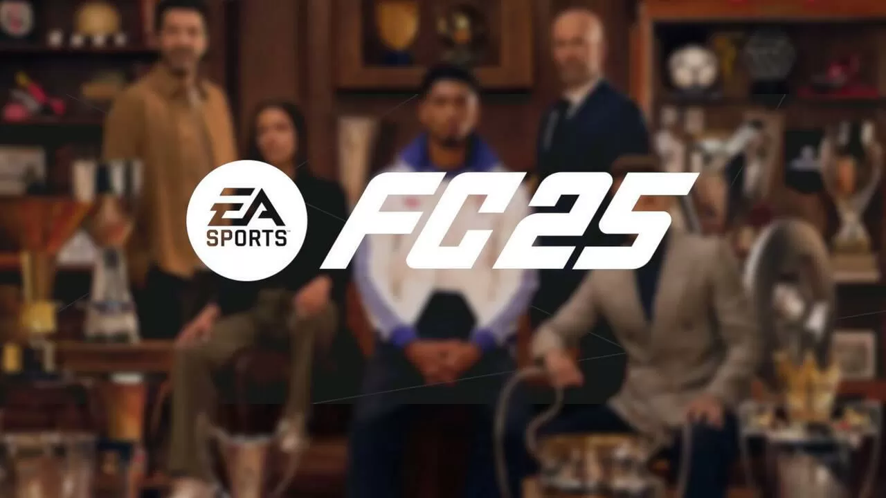
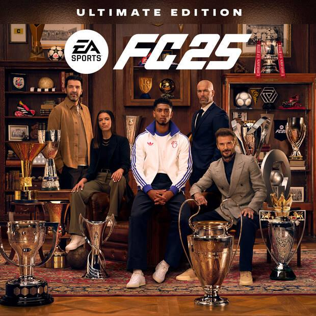

Tras varios meses con multiples rumores sobre un retraso o una cancelacion de la nueva entrega, EA SPORTS ha decidido revelar de forma oficial la portada de EA SPORTS FC 25 y con ello ha subido un video que se estrenara en YouTube con el primer trailer del juego.
Esta entrega anual de EA Sports FC 2025 tiene a varias estrellas del futbol en su portada entre, esos futbolistas se encuentran: El jugador estrella del real madrid Jude Bellingham la jugadora española del FC Barcelona Aitana Bonmati y 3 leyendas: Zinedine Zidane, David Beckham y Gianluigi Buffon.
La presentacion del juego sera esta semana, y a la hora de publicacion de esta noticia el trailer no ha salido pero ya esta publicado en forma de estreno en YouTube para el 17 de julio a las 10:57AM (Colombia), a partir de su estreno el video quedara publico para todos. a continuacion el enlace del video: